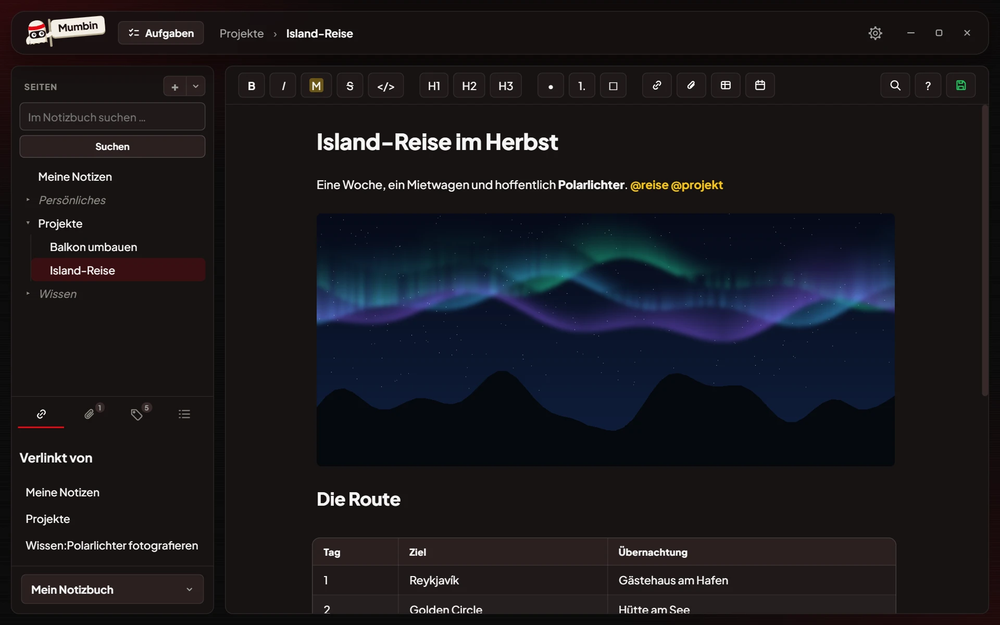

Alle Beiträge / Ratgeber / 5 Min. Lesezeit
Kostenlose Notiz-App für Windows: verschlüsselt, offline und ohne Konto
Eine Notiz-App soll schnell sein, Ordnung halten und deine Gedanken schützen. Mumbin bringt das in einer einzigen portablen Datei mit – kostenlos und ohne Anmeldung.
Das bringt eine gute Notiz-App mit
Wer Notizen digital führt, möchte vor allem drei Dinge: sie schnell festhalten, später wiederfinden und sicher sein, dass sie privat bleiben. Mumbin ist genau darauf zugeschnitten. Es ist eine Notiz-App für Windows 10 und 11, die auf deinem Rechner läuft und deine Texte als Dateien in einem Ordner ablegt, den du selbst wählst.

Die wichtigsten Funktionen im Überblick
- Schreiben mit Formatierung: Überschriften, Listen, Tabellen, Bilder und Code erscheinen sofort so, wie sie gemeint sind.
- Verknüpfen: Seiten stehen in einem Baum und verweisen aufeinander; Rückverweise zeigen, wo eine Seite noch vorkommt.
- Finden: Die Suche durchsucht Titel und Text und zeigt zu jedem Treffer eine Vorschau.
- Aufgaben: Ein Kästchen in der Notiz genügt, die Aufgabenübersicht sammelt alle – auf Wunsch mit Beginn und Frist.
- Verschlüsseln: pro Seite, mit einem gemeinsamen Tresor oder als versiegeltes Notizbuch. Mehr dazu in der Anleitung „Notizen verschlüsseln“.
- Anhänge: PDFs, Scans, Tabellen und beliebige andere Dateien legst du direkt an der Seite ab.
Ohne Konto, ohne Installation
Mumbin besteht aus einer einzigen EXE-Datei von rund 4,3 Megabyte. Es gibt keinen Installationsassistenten und kein Benutzerkonto. Deine Einstellungen speichert das Programm im Ordner mumbin_data neben der EXE, nicht in der Registrierung von Windows. Dadurch lässt sich alles auch auf einem USB-Stick mitnehmen. Mehr zu diesem Vorteil steht im Artikel Portable Notiz-App.
In drei Schritten starten
- Herunterladen: Lade mumbin.exe herunter und lege sie in einen beschreibbaren Ordner.
- Starten: Beim ersten Start wählst du den Ordner für dein Notizbuch. Fehlt die Microsoft Edge WebView2 Runtime, die auf vielen Windows-PCs bereits vorhanden ist, installierst du sie einmalig.
- Loslegen: Schreibe deine erste Seite, verknüpfe sie mit einer zweiten und schütze, was privat bleiben soll.
Für wen eignet sich Mumbin?
Mumbin passt zu allen, die persönlich unter Windows arbeiten und ihre Notizen lokal und geschützt aufbewahren möchten: zum Lernen und Recherchieren, für Projekte, Reisen, Tagebuch und Wissenssammlungen. Konkrete Ideen findest du im Artikel Anwendungsfälle im Alltag.
Häufige Fragen
Ist Mumbin wirklich kostenlos?
Ja. Du kannst Mumbin kostenlos herunterladen und nutzen, privat und intern in einem Unternehmen. Der Quellcode ist öffentlich einsehbar; die genauen Bedingungen stehen in der Lizenzdatei auf GitHub.
Brauche ich ein Konto oder eine Anmeldung?
Nein. Es gibt kein Konto und keine Anmeldung. Du startest die EXE, wählst einen Ordner für dein Notizbuch und schreibst los.
Warum zeigt Windows beim ersten Start eine Warnung?
Die Vorabversion ist noch nicht digital signiert, deshalb kann Windows einen Hinweis anzeigen. Du kannst die SHA-256-Prüfsumme der heruntergeladenen Datei mit dem Wert auf der Release-Seite vergleichen und so sicherstellen, dass sie unverändert ist.